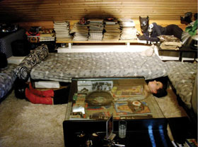

Anna Mccarthy: Bored Rebels
Underdox-salon
zur Halbzeit
Sa., 18.05., 20:30 Uhr, Werkstattkino München
Sie sind gelangweilt, apathisch, dekadent und quasi-provokant: Die Vorstadt-Rebellen aus Oberpfaffenhofen, Moosach und dem Westend haben nichts mehr zu tun. In ihren Zimmern legen sie Schallplatten vergangener glorreicher Zeiten auf und umgeben sich mit ikonographischen Gegenständen der Rebellion.
"I wanna be bored all the time, I wanna be one of a kind. I am bored, bored, bored out of my mind and that's why I'll be bored all teh time. I don't wanna work…"
Das Programm – Live Narration mit Anna McCarthy und Filme:
Killing Bored Rebels in Other Places - Whatever you do do not mix the colors, 40 min, 2012
mit live Narration von Anna McCarthy und Musik von Tagar
Bored Rebels Going Underground, 20 min, 2012
Bored Rebel im Westend, 20 min, 2012
Bored Rebel in Moosach, 12 min, 2010
Bored Rebel in Oberpfaffenhofen, 20 min, 2009
Alle Filme sind Teil des 2008 begonnenen Kunstprojekts "How to Start a Revolution" von Anna McCarthy.

Anna McCarthy, geb. 1981 in München. Studium an der Kunstakademie München & Glasgow School of Art. Mitbegründerin des Künstlerkollektivs FINN. Sie ist Bassistin und Mitglied der Münchner "DAMENKAPELLE".
Ausstellungen (Auswahl): 2012 Solo Show, Galerie Esther Donatz, München – 2011 Jahresgaben, Kunstverein München, Book Performance & Artist Talk, Kunstverein München, Book signing, NY Art Book Fair, Knust/Extrapool stand, MOMA PS1, Book performance, Art Babel, Munich, Sorry I can't hear you. Speak up. Mural, Staging Opinion Festival, München, Book publication: REVOLUTION & ITS MUSES by Anna McCarthy, KNUST/Extrapool, Extrapool presents Audiotoop w/Rumpeln & Anna McCarthy, Whitebox, München Ich dachte man darf alles, Maximilansforum, München, Theaterprojekt